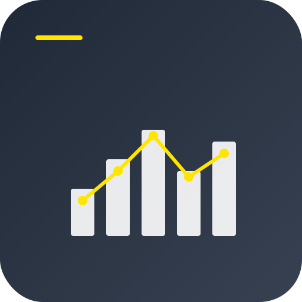
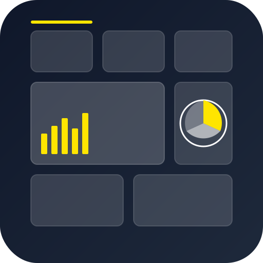

🎨 PWA Icon Options for Qlik Analytics

Option 1: Analytics Chart
Clean bar chart with trend line overlay, perfect for representing data analytics and business intelligence.
Features:
- Bar chart with ascending data trend
- Yellow accent line (Qlik brand color)
- Professional gradient background
- Clear data visualization focus

Option 2: Dashboard Interface
Modern dashboard layout with multiple widgets, representing the comprehensive analytics platform.
Features:
- Multi-widget dashboard layout
- Pie chart and bar chart elements
- Grid-based professional design
- Comprehensive analytics representation
Option 3: Qlik-Inspired Q
Distinctive "Q" symbol with integrated data elements, directly referencing the Qlik brand identity.
Features:
- Iconic "Q" letterform design
- Embedded mini charts inside Q
- Strong brand recognition
- Blue-to-dark gradient background
// To apply your chosen icon, update vite.config.ts:
icons: [
{
src: 'pwa-icon-option-X.svg', // Replace X with your choice (1, 2, or 3)
sizes: 'any',
type: 'image/svg+xml',
purpose: 'any'
},
// ... other icon configurations
]